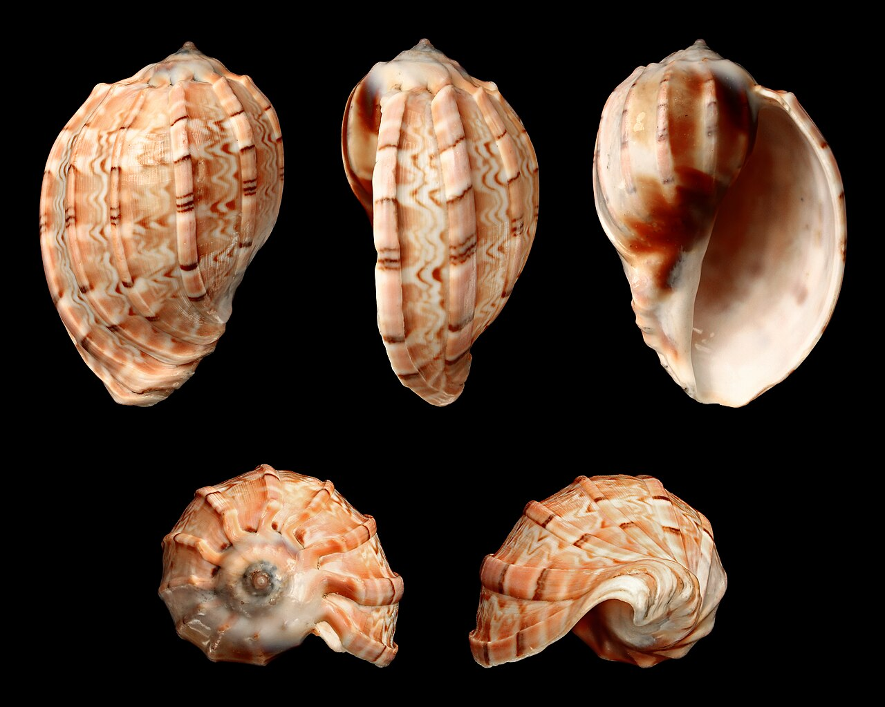
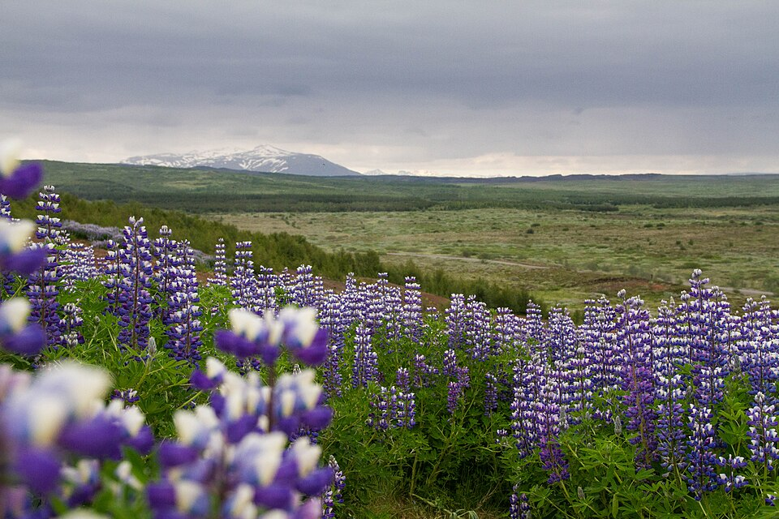
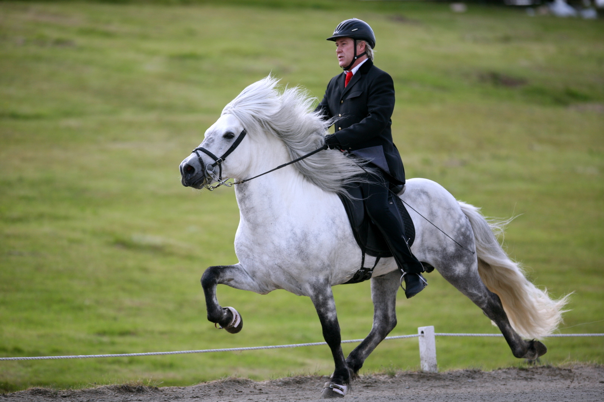

No rental penalty
Germany pickup and return keeps the car simple and avoids a Switzerland–Germany one-way fee.
September 5–18, 2026 · 13 nights
Four nights based in Reykjavík, then one clean flight to Munich and a slow scenic loop through Bavaria and Austria—ending on Delta’s nonstop home.


Delta means one stop through JFK or Detroit. The genuinely nonstop Delta leg is the return: Munich → Atlanta.
01 / THE RECOMMENDATION
Fly ATL → KEF on September 5, spend four nights in Reykjavík, then take Icelandair’s nonstop to Munich on September 10. Pick up the car once, loop through Bavaria and Salzkammergut, and fly MUC → ATL nonstop on the 18th.
Germany pickup and return keeps the car simple and avoids a Switzerland–Germany one-way fee.
Königssee and Gosausee deliver two completely different headline lake days within one compact loop.
The final night is back in Munich, so the Delta nonstop is not held hostage by a long departure-day drive.
02 / LIVE FLIGHT DESK
One stop; compare Delta against Icelandair partners.
Icelandair nonstop; book separately.
Daily Delta nonstop; best route fit.
| Date / leg | Option seen | Price seen | What it means | Source |
|---|---|---|---|---|
| Sat · Sep 5ATL → KEF | Icelandair · 1 stop 12:05 → 06:05 · 14h |
$707round-trip Sep 5–11 benchmark | An exact dated price, but not the open-jaw ticket. Useful as a market check. | Trip.com ↗ |
| Sun · Sep 6ATL → KEF | Delta · 1 stop | $465one-way fare displayed | The best Delta cash benchmark surfaced, one day later than target. | Expedia ↗ |
| Thu · Sep 10KEF → MUC | SAS · 1 stop | CAD 195one-way dated market floor | Cheapest exact result found; use it as leverage against the faster nonstop. | Trip.com ↗ |
| Sep scheduleKEF → MUC | Icelandair · nonstop about 3h 45m |
46,301 ISKcurrent round-trip floor | The time-saving choice. Icelandair publishes Munich year-round, up to 10× weekly. | Icelandair ↗ |
| Fri · Sep 18MUC → ATL | Nonstop SkyTeam fare Delta is the route operator · about 10h 20m |
$832one-way displayed fare | The best logistical finish and the cheapest date flagged for this route. | Skyscanner ↗ |
| Sat · Sep 19MUC → ATL | Nonstop · 10:25 → 14:45 KLM-marketed codeshare result |
$718round-trip comparator | The nonstop operates, but the accessible result did not expose a reliable one-way fare. | KAYAK ↗ |
| Fri · Sep 18ZRH → ATL | Delta nonstop 10:10 → 14:54 · 10h 44m |
MYR 7,405one-way displayed fare | Beautiful alternate, but the one-way price is much worse and the rental gets harder. | Trip.com ↗ |
Do not price this as two transatlantic one-ways. Search Delta as one multi-city ticket: ATL → KEF on Sep 5, then MUC → ATL on Sep 18 or 19. Transatlantic one-way pricing is visibly distorted in the results above.
03 / THE MAP
04 / ICELAND · FOUR NIGHTS
One hotel, no Ring Road ambition. The Golden Circle and South Coast are the two non-negotiables; the fourth day stays flexible.

Drop the bags and use the day: Hallgrímskirkja, the harbor and Sun Voyager, Perlan, then a reserved Sky Lagoon evening if the flight arrives on schedule.

Þingvellir → Geysir → Gullfoss, with Friðheimar or Efstidalur as the warm, food-first middle.
Seljalandsfoss, Skógafoss, and Vík. Stop at Reynisfjara only in safe conditions and never turn your back on the sea.

Keep this day intentionally uncommitted. A horse farm and geothermal soak fit the trip better than another 10-hour drive.
05 / THE 13-NIGHT EDIT
Every row opens into a practical mini-brief. September 19 is included as an optional buffer rather than forcing another hotel move.
Book the outbound and the Munich return together as Delta multi-city first. If Delta’s one-stop fare is weak, compare a separate Icelandair-partner itinerary.
Drop the bags and start sightseeing. Walk downhill from Hallgrímskirkja to the harbor and Sun Voyager, visit Perlan, then use a timed Sky Lagoon reservation for the evening. If the flight is late, cut one stop—not the whole day.
Open the Iceland card ↑Leave by 8:00, make Þingvellir the walking stop, then use Geysir and Gullfoss as short high-impact visits. Reserve Friðheimar lunch if it fits.
Open the Iceland card ↑This is the longest Iceland day. Skip Vík if wind or energy turns; the two waterfall stops alone justify the drive.
Open the Iceland card ↑Use this to recover anything weather displaced. Otherwise pick a horse farm and soak rather than collecting another full-day route.
Open the Iceland card ↑Choose Icelandair nonstop if its premium over the CAD 195 connecting floor is reasonable. Collect the rental only after landing; sleep central or east of Munich.
Keep the car parked. Walk Marienplatz to Viktualienmarkt, then choose the Residenz or English Garden—not both.
Drive after breakfast, settle into the valley, and use the afternoon for Ramsau church, Hintersee, or simply the lodge.
Take an early electric boat to St. Bartholomä. The lake carries the day; no summit hike is required. If boats are disrupted, pivot to Jennerbahn or Hintersee.
Cross into Austria, stop for lunch and a short old-town walk in Salzburg, then arrive in Gosau before dinner.
Arrive early, see the waterfront before tour traffic, then leave by late morning. The afternoon belongs to the Gosau valley—not another attraction list.
This is the easiest huge-payoff day of the trip. Walk as much of the shore as weather and energy allow, picnic, and leave the afternoon open.
If the summit forecast is clear, book the first useful Schafbergbahn slot. Under cloud, substitute Bad Ischl or a fuller Salzburg stop and continue to Munich.
The protected Munich night makes the 10:25-ish nonstop realistic without a stressful dawn drive. Return the car before check-in.
Use September 18 for a final Munich day and fly September 19. Do not spend the extra night creating another base—the value is lower stress, not another pin.
06 / THE SWISS VERSION
Fly KEF → Zürich on Sep 10, spend two nights around Lucerne, then move through Innsbruck and end in Munich on Sep 19. It is prettier on paper and busier in practice.
Lakefront arrival, Rigi or Pilatus weather day.
Cross east with one proper mountain base.
Keep Gosau, Hallstatt, and the lake day.
Return the car and protect the flight home.
07 / BOOKING ORDER
Multi-city: ATL → KEF Sep 5, then MUC → ATL Sep 18 and Sep 19. Run cash and miles separately.
Open Delta multi-city ↗Compare Icelandair nonstop with the CAD 195 connecting floor. Time is worth paying for here.
Open Icelandair ↗Reykjavík 4 nights, Munich 2 + 1, Berchtesgaden 2, Gosau 3. Favor flexible cancellation first.
Munich pickup/return. Leave boats, railways, and lagoons changeable where possible.
08 / SOURCES & CAVEATS
Official destination pages and Summer 2026 partner schedule show KEF via JFK/Detroit/Minneapolis and nonstop ATL service from Munich, Frankfurt, and Zürich.
Reykjavík routes ↗Germany routes ↗Icelandair’s 2026 destination schedule lists Munich year-round, with up to ten weekly flights; Zürich and Frankfurt are also practical gateways.
2026 schedule ↗Dated fare snapshots came from Trip.com, Expedia, Skyscanner, and KAYAK on July 20, 2026. They are snapshots, not holds.
Return to fare grid ↑Schedules, volcanic conditions, weather, and attraction operations can change. Re-run every booking link before purchase.
SafeTravel Iceland ↗